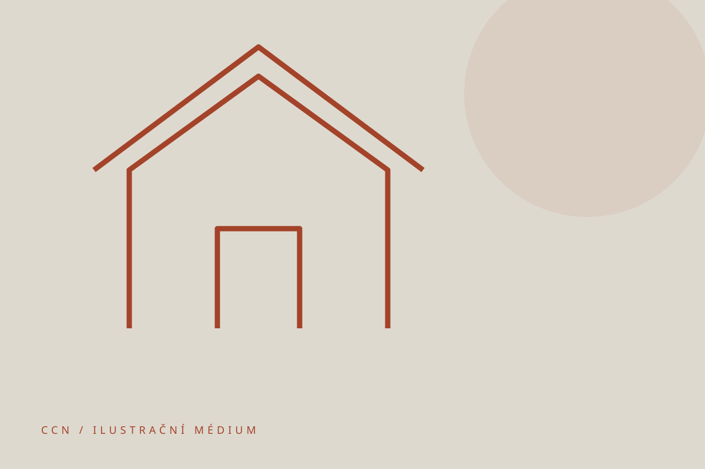

AL LEŠENÍ
Fasádní lešení
Fasádní lešení tvoří základ naší nabídky pro stavební a renovační práce. Pro konkrétní řešení stavby nás kontaktujte.

FASÁDNÍ LEŠENÍ
Řešení podle stavby
Na původním webu najdete samostatnou nabídku fasádního lešení včetně informací k pronájmu a montáži.
Rozsah konstrukce, podmínky a cenu je vhodné řešit podle konkrétní stavby.
KONTAKT
Probereme vaše zadání
Sdělte nám místo stavby, rozsah prací a požadovaný termín.
Přejít na kontakt